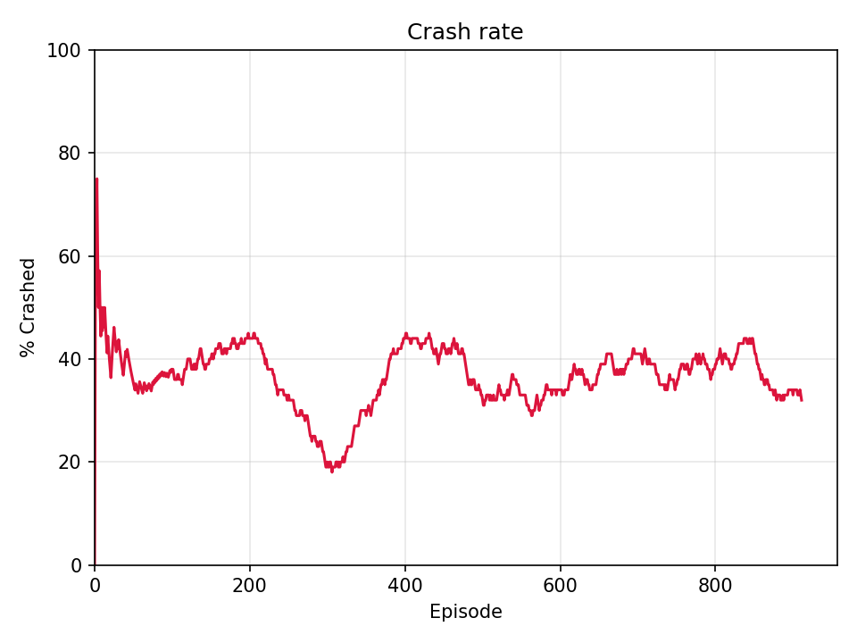

Projet phare · IA · Python
Code source du projet Deep Learning sur GitHub
Deep Learning - Lunar Lander
Trois algorithmes d'apprentissage par renforcement comparés sur lunar-lander-v3 (Gymnasium) : Q-Learning discrétisé, Deep Q-Learning, puis PPO face à du vent. 95 % de réussite sur Lunar Lander.
Épisode 250
Épisode 700


- Entraînement
- ~950 épisodes
- Résultat
- Crashs ~75 % → ~30 %